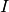
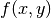
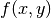
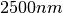
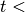

User Guide¶
Image Data Representation¶
The otb::Image class follows the spirit of Generic Programming, where types are separated from the algorithmic behavior of the class. OTB supports images with any pixel type and any spatial dimension.
- Creating an Image. See example Image1.cxx.
- Reading an Image from a File. See example Image2.cxx.
- Accessing Pixel Data. See example Image3.cxx.
- Defining Origin and Spacing. See example Image4.cxx.
- Accessing Image Metadata. See example MetadataExample.cxx.
- Vector Images. See example VectorImage.cxx.
- Importing Image Data from a Buffer. See example Image5.cxx.
- Image Lists. See example ImageListExample.cxx.
Reading and Writing Images¶
This chapter describes the toolkit architecture supporting reading and writing of images to files. OTB does not enforce any particular file format, instead, it provides a structure inherited from ITK, supporting a variety of formats that can be easily extended by the user as new formats become available.
{kind=link}
{kind=link}
{kind=link}
- Basic Example. See example ImageReadWrite.cxx.
- Reading, Casting and Writing Images. See example ImageReadCastWrite.cxx.
- Extracting Regions. See example ImageReadRegionOfInterestWrite.cxx.
Reading and Writing Vector Images¶
Images whose pixel type is a Vector, a CovariantVector, an Array, or a Complex are quite common in image processing. One of the uses of these tye of images is the processing of SLC SAR images, which are complex.
- Reading and Writing Complex Images. See example ComplexImageReadWrite.cxx.
- Reading and Writing Multiband Images. See example MultibandImageReadWrite.cxx.
- Extracting ROIs. See example ExtractROI.cxx.
- Reading Image Series. See example ImageSeriesIOExample.cxx.
Reading and Writing Auxiliary Data¶
As we have seen in the previous chapter, OTB has a great capability to read and process images. However, images are not the only type of data we will need to manipulate. Images are characterized by a regular sampling grid. For some data, such as Digital Elevation Models (DEM) or Lidar, this is too restrictive and we need other representations.
Vector data are also used to represent cartographic objects, segmentation results, etc: basically, everything which can be seen as points, lines or polygons. OTB provides functionnalities for accessing this kind of data.
- Reading DEM Files. See example DEMToImageGenerator.cxx.
- Elevation management with OTB. See example DEMHandlerExample.cxx.
More examples about representing DEM are presented in section [sec:ViewingAltitudeImages].
- Reading and Writing Shapefiles and KML. See example VectorDataIOExample.cxx.
Basic Filtering¶
This chapter introduces the most commonly used filters found in OTB. Most of these filters are intended to process images. They will accept one or more images as input and will produce one or more images as output. OTB is based ITK’s data pipeline architecture in which the output of one filter is passed as input to another filter. (See Section [sec:DataProcessingPipeline] on page for more information.)
The thresholding operation is used to change or identify pixel values based on specifying one or more values (called the threshold value). The following sections describe how to perform thresholding operations using OTB.
- Threshold to Point Set. See example ThresholdToPointSetExample.cxx.
OTB and ITK provide a lot of filters allowing to perform basic operations on image layers (thresholding, ratio, layers combinations…). It allows to create a processing chain defining at each step operations and to combine them in the data pipeline. But the library offers also the possibility to perform more generic complex mathematical operation on images in a single filter: the otb::BandMathImageFilter and more recently the otb::BandMathImageFilterX.
A new version of the BandMath filter is now available; among the new functionalities, variables representing multi-band pixels were introduced, as well as variables representing neighborhoods of pixels. The class name is otb::BandMathImageFilterX.
- BandMath filter. See example BandMathFilterExample.cxx.
- BandMathX filter. See example BandMathXImageFilterExample.cxx.
- Ratio of Means Detector. See example TouziEdgeDetectorExample.cxx.
- Mean Shift filtering and clustering. See example MeanShiftSegmentationFilterExample.cxx.
- Edge Preserving Speckle Reduction Filters. See example LeeImageFilter.cxx. See example FrostImageFilter.cxx.
- Edge preserving Markov Random Field. See example MarkovRestorationExample.cxx.
Disparity Map Estimation¶
This chapter introduces the tools available in OTB for the estimation of geometric disparities between images.
The problem we want to deal with is the one of the automatic disparity map estimation of images acquired with different sensors. By different sensors, we mean sensors which produce images with different radiometric properties, that is, sensors which measure different physical magnitudes: optical sensors operating in different spectral bands, radar and optical sensors, etc.
For this kind of image pairs, the classical approach of fine correlation , can not always be used to provide the required accuracy, since this similarity measure (the correlation coefficient) can only measure similarities up to an affine transformation of the radiometries.
There are two main questions which can be asked about what we want to do:
- Can we define what the similarity is between, for instance, a radar and an optical image?
- What does fine registration mean in the case where the geometric distortions are so big and the source of information can be located in different places (for instance, the same edge can be produced by the edge of the roof of a building in an optical image and by the wall-ground bounce in a radar image)?
We can answer by saying that the images of the same object obtained by different sensors are two different representations of the same reality. For the same spatial location, we have two different measures. Both information come from the same source and thus they have a lot of common information. This relationship may not be perfect, but it can be evaluated in a relative way: different geometrical distortions are compared and the one leading to the strongest link between the two measures is kept.
When working with images acquired with the same (type of) sensor one can use a very effective approach. Since a correlation coefficient measure is robust and fast for similar images, one can afford to apply it in every pixel of one image in order to search for the corresponding HP in the other image. One can thus build a deformation grid (a sampling of the deformation map). If the sampling step of this grid is short enough, the interpolation using an analytical model is not needed and high frequency deformations can be estimated. The obtained grid can be used as a re-sampling grid and thus obtain the registered images.
No doubt, this approach, combined with image interpolation techniques (in order to estimate sub-pixel deformations) and multi-resolution strategies allows for obtaining the best performances in terms of deformation estimation, and hence for the automatic image registration.
Unfortunately, in the multi-sensor case, the correlation coefficient can not be used. We will thus try to find similarity measures which can be applied in the multi-sensor case with the same approach as the correlation coefficient.
We start by giving several definitions which allow for the formalization of the image registration problem. First of all, we define the master image and the slave image:
Master image: image to which other images will be registered; its geometry is considered as the reference.
Slave image: image to be geometrically transformed in order to be registered to the master image.
Two main concepts are the one of similarity measure and the one of geometric transformation:
Let  and be two images and let  a
similarity criterion, we call similarity measure any scalar, strictly
positive function:
a
similarity criterion, we call similarity measure any scalar, strictly
positive function:

has an absolute maximum when the two images and
are identical in the sense of the criterion .
A geometric transformation  is an operator which,
applied to the coordinates
is an operator which,
applied to the coordinates  of a point in the slave image,
gives the coordinates of its HP in the master image:
of a point in the slave image,
gives the coordinates of its HP in the master image:
Finally we introduce a definition for the image registration problem:
Registration problem:
determine a geometric transformation
which maximizes the
similarity between a master image and the result of the
transformation :re-sampling of by applying
.
Geometric deformation modeling¶
The geometric transformation of definition [defin-T] is used for the correction of the existing deformation between the two images to be registered. This deformation contains information which are linked to the observed scene and the acquisition conditions. They can be classified into 3 classes depending on their physical source:
- deformations linked to the mean attitude of the sensor (incidence angle, presence or absence of yaw steering, etc.);
- deformations linked to a stereo vision (mainly due to the topography);
- deformations linked to attitude evolution during the acquisition (vibrations which are mainly present in push-broom sensors).
These deformations are characterized by their spatial frequencies and intensities which are summarized in table [tab-deform].
| Intensity | Spatial Frequency | |
|---|---|---|
| Mean Attitude | Strong | Low |
| Stereo | Medium | High and Medium |
| Attitude evolution | Low | Low to Medium |
Table: Characterization of the geometric deformation sources
Depending on the type of deformation to be corrected, its model will be different. For example, if the only deformation to be corrected is the one introduced by the mean attitude, a physical model for the acquisition geometry (independent of the image contents) will be enough. If the sensor is not well known, this deformation can be approximated by a simple analytical model. When the deformations to be modeled are high frequency, analytical (parametric) models are not suitable for a fine registration. In this case, one has to use a fine sampling of the deformation, that means the use of deformation grids. These grids give, for a set of pixels of the master image, their location in the slave image.
The following points summarize the problem of the deformation modeling:
- An analytical model is just an approximation of the deformation. It
is often obtained as follows:
- Directly from a physical model without using any image content information.
- By estimation of the parameters of an a priori model (polynomial,
affine, etc.). These parameters can be estimated:
- Either by solving the equations obtained by taking HP. The HP can be manually or automatically extracted.
- Or by maximization of a global similarity measure.
- A deformation grid is a sampling of the deformation map.
The last point implies that the sampling period of the grid must be short enough in order to account for high frequency deformations (Shannon theorem). Of course, if the deformations are non stationary (it is usually the case of topographic deformations), the sampling can be irregular.
As a conclusion, we can say that definition [defin-recal] poses the registration problem as an optimization problem. This optimization can be either global or local with a similarity measure which can also be either local or global. All this is synthesized in table [tab-approches].
| Geometric model | Similarity measure | Optimization |
|---|---|---|
| Physical model | None | Global |
| Analytical model | Local | Global |
| with a priori HP | ||
| Analytical model | Global | Global |
| without a priori HP | ||
| Grid | Local | Local |
Table: Approaches to image registration
The ideal approach would consist in a registration which is locally optimized, both in similarity and deformation, in order to have the best registration quality. This is the case when deformation grids with dense sampling are used. Unfortunately, this case is the most computationally heavy and one often uses either a low sampling rate of the grid, or the evaluation of the similarity in a small set of pixels for the estimation of an analytical model. Both of these choices lead to local registration errors which, depending on the topography, can amount several pixels.
Even if this registration accuracy can be enough in many applications, (ortho-registration, import into a GIS, etc.), it is not acceptable in the case of data fusion, multi-channel segmentation or change detection. This is why we will focus on the problem of deformation estimation using dense grids.
Similarity measures¶
The fine modeling of the geometric deformation we are looking for needs for the estimation of the coordinates of nearly every pixel in the master image inside the slave image. In the classical mono-sensor case where we use the correlation coefficient we proceed as follows.
The geometric deformation is modeled by local rigid displacements. One wants to estimate the coordinates of each pixel of the master image inside the slave image. This can be represented by a displacement vector associated to every pixel of the master image. Each of the two components (lines and columns) of this vector field will be called deformation grid.
We use a small window taken in the master image and we test the similarity for every possible shift within an exploration area inside the slave image (figure [zones]).
{kind=link}
That means that for each position we compute the correlation coefficient. The result is a correlation surface whose maximum gives the most likely local shift between both images:
In this expression,  is the number of pixels of the analysis
window, and are the estimated mean values
inside the analysis window of respectively image and image
and
is the number of pixels of the analysis
window, and are the estimated mean values
inside the analysis window of respectively image and image
and  and are their standard
deviations.
and are their standard
deviations.
Quality criteria can be applied to the estimated maximum in order to give a confidence factor to the estimated shift: width of the peak, maximum value, etc. Sub-pixel shifts can be measured by applying fractional shifts to the sliding window. This can be done by image interpolation.
The interesting parameters of the procedure are:
- The size of the exploration area: it determines the computational load of the algorithm (we want to reduce it), but it has to be large enough in order to cope with large deformations.
- The size of the sliding window: the robustness of the correlation coefficient estimation increases with the window size, but the hypothesis of local rigid shifts may not be valid for large windows.
The correlation coefficient cannot be used with original grey-level images in the multi-sensor case. It could be used on extracted features (edges, etc.), but the feature extraction can introduce localization errors. Also, when the images come from sensors using very different modalities, it can be difficult to find similar features in both images. In this case, one can try to find the similarity at the pixel level, but with other similarity measures and apply the same approach as we have just described.
The concept of similarity measure has been presented in definition
[def-simil]. The difficulty of the procedure lies in finding the
function  which properly represents the criterion .
We also need that be easily and robustly estimated with
small windows.
which properly represents the criterion .
We also need that be easily and robustly estimated with
small windows.
The correlation coefficient¶
We remind here the computation of the correlation coefficient between
two image windows and . The coordinates of the pixels
inside the windows are represented by :
In order to qualitatively characterize the different similarity
measures we propose the following experiment. We take two images which
are perfectly registered and we extract a small window of size
 from each of the images (this size is set to
for this experiment). For the master image, the
window will be centered on coordinates
from each of the images (this size is set to
for this experiment). For the master image, the
window will be centered on coordinates  (the center of the image) and for the slave image, it will be
centered on coordinates . With different values of (from -10 pixels to
10 pixels in our experiments), we obtain an estimate of
as a function of , which we write as
for short. The obtained curve should have a
maximum for , since the images are perfectly
registered. We would also like to have an absolute maximum with a high
value and with a sharp peak, in order to have a good precision for the
shift estimate.
(the center of the image) and for the slave image, it will be
centered on coordinates . With different values of (from -10 pixels to
10 pixels in our experiments), we obtain an estimate of
as a function of , which we write as
for short. The obtained curve should have a
maximum for , since the images are perfectly
registered. We would also like to have an absolute maximum with a high
value and with a sharp peak, in order to have a good precision for the
shift estimate.
- Regular grid disparity map estimation. See example FineRegistrationImageFilterExample.cxx.
- Stereo reconstruction. See example StereoReconstructionExample.cxx.
Orthorectification and Map Projection¶
If no appropriate sensor model is available in the image meta-data, OTB offers the possibility to estimate a sensor model from the image.
- Evaluating Sensor Model. See example EstimateRPCSensorModelExample.cxx.
Limits of the Approach¶
As you may understand by now, accurate geo-referencing needs accurate DEM and also accurate sensor models and parameters. In the case where we have several images acquired over the same area by different sensors or different geometric configurations, geo-referencing (geographical coordinates) or ortho-rectification (cartographic coordinates) is not usually enough. Indeed, when working with image series we usually want to compare them (fusion, change detection, etc.) at the pixel level.
Since common DEM and sensor parameters do not allow for such an accuracy, we have to use clever strategies to improve the co-registration of the images. The classical one consists in refining the sensor parameters by taking homologous points between the images to co-register. This is called bundle block adjustment and will be implemented in coming versions of OTB.
Even if the model parameters are refined, errors due to DEM accuracy can not be eliminated. In this case, image to image registration can be applied. These approaches are presented in chapters [chap:ImageRegistration] and [sec:DisparityMapEstimation].
- Orthorectification with OTB. See example OrthoRectificationExample.cxx.
- Vector data projection manipulation. See example VectorDataProjectionExample.cxx.
- Geometries projection manipulation. See example GeometriesProjectionExample.cxx.
- Vector data area extraction. See example VectorDataExtractROIExample.cxx.
Radiometry¶
Remote sensing is not just a matter of taking pictures, but also – mostly – a matter of measuring physical values. In order to properly deal with physical magnitudes, the numerical values provided by the sensors have to be calibrated. After that, several indices with physical meaning can be computed.
Radiometric Indices¶
Introduction¶
With multispectral sensors, several indices can be computed, combining several spectral bands to show features that are not obvious using only one band. Indices can show:
- Vegetation (Tab [tab:vegetationindices])
- Soil (Tab [tab:soilindices])
- Water (Tab [tab:waterindices])
- Built up areas (Tab [tab:builtupindices])
A vegetation index is a quantitative measure used to measure biomass or vegetative vigor, usually formed from combinations of several spectral bands, whose values are added, divided, or multiplied in order to yield a single value that indicates the amount or vigor of vegetation.
Numerous indices are available in OTB and are listed in table [tab:vegetationindices] to [tab:builtupindices] with their references.
| NDVI | Normalized Difference Vegetation Index |
| RVI | Ratio Vegetation Index |
| PVI | Perpendicular Vegetation Index |
| SAVI | Soil Adjusted Vegetation Index |
| TSAVI | Transformed Soil Adjusted Vegetation Index |
| MSAVI | Modified Soil Adjusted Vegetation Index |
| MSAVI2 | Modified Soil Adjusted Vegetation Index |
| GEMI | Global Environment Monitoring Index |
| WDVI | Weighted Difference Vegetation Index |
| AVI | Angular Vegetation Index |
| ARVI | Atmospherically Resistant Vegetation Index |
| TSARVI | Transformed Soil Adjusted Vegetation Index |
| EVI | Enhanced Vegetation Index |
| IPVI | Infrared Percentage Vegetation Index |
| TNDVI | Transformed NDVI |
Table: Vegetation indices
| IR | Redness Index |
| IC | Color Index |
| IB | Brilliance Index |
| IB2 | Brilliance Index |
Table: Soil indices
| SRWI | Simple Ratio Water Index |
| NDWI | Normalized Difference Water Index |
| NDWI2 | Normalized Difference Water Index |
| MNDWI | Modified Normalized Difference Water Index |
| NDPI | Normalized Difference Pond Index |
| NDTI | Normalized Difference Turbidity Index |
| SA | Spectral Angle |
Table: Water indices
| NDBI | Normalized Difference Built Up Index |
| ISU | Index Surfaces Built |
Table: Built-up indices
The use of the different indices is very similar, and only few example are given in the next sections.
NDVI¶
NDVI was one of the most successful of many attempts to simply and quickly identify vegetated areas and their condition, and it remains the most well-known and used index to detect live green plant canopies in multispectral remote sensing data. Once the feasibility to detect vegetation had been demonstrated, users tended to also use the NDVI to quantify the photosynthetic capacity of plant canopies. This, however, can be a rather more complex undertaking if not done properly.
- NDVI. See example NDVIRAndNIRVegetationIndexImageFilter.cxx.
- ARVI. See example ARVIMultiChannelRAndBAndNIRVegetationIndexImageFilter.cxx.
- AVI. See example AVIMultiChannelRAndGAndNIRVegetationIndexImageFilter.cxx.
Atmospheric Corrections¶
See example AtmosphericCorrectionSequencement.cxx.
Image Fusion¶
Satellite sensors present an important diversity in terms of characteristics. Some provide a high spatial resolution while other focus on providing several spectral bands. The fusion process brings the information from different sensors with different characteristics together to get the best of both worlds.
Most of the fusion methods in the remote sensing community deal with the pansharpening technique. This fusion combines the image from the PANchromatic sensor of one satellite (high spatial resolution data) with the multispectral (XS) data (lower resolution in several spectral bands) to generate images with a high resolution and several spectral bands. Several advantages make this situation easier:
- PAN and XS images are taken simultaneously from the same satellite (or with a very short delay);
- the imaged area is common to both scenes;
- many satellites provide these data (SPOT 1-5, Quickbird, Pleiades)
This case is well-studied in the literature and many methods exist. Only very few are available in OTB now but this should evolve soon.
Simple Pan Sharpening¶
A simple way to view the pan-sharpening of data is to consider that, at the same resolution, the panchromatic channel is the sum of the XS channel. After putting the two images in the same geometry, after orthorectification (see chapter [sec:Ortho]) with an oversampling of the XS image, we can proceed to the data fusion.
The idea is to apply a low pass filter to the panchromatic band to give it a spectral content (in the Fourier domain) equivalent to the XS data. Then we normalize the XS data with this low-pass panchromatic and multiply the result with the original panchromatic band.
The process is described on figure [fig:PanSharpening].
{kind=link}
See example PanSharpeningExample.cxx.
Bayesian Data Fusion¶
See example BayesianFusionImageFilter.cxx.
Feature Extraction¶
Textures¶
See example TextureExample.cxx.
See example PanTexExample.cxx.
See example SFSExample.cxx.
Interest Points¶
- Harris detector. See example HarrisExample.cxx.
- SURF detector. See example SURFExample.cxx.
- Line Detection. See example RatioLineDetectorExample.cxx. See example CorrelationLineDetectorExample.cxx. See example AsymmetricFusionOfLineDetectorExample.cxx. See example ParallelLineDetectionExample.cxx.
- Segment Extraction. See example LineSegmentDetectorExample.cxx.
- Right Angle Detector. See example RightAngleDetectionExample.cxx.
Density Features¶
An interesting approach to feature extraction consists in computing the density of previously detected features as simple edges or interest points.
- Edge Density. See example EdgeDensityExample.cxx.
Geometric Moments¶
Complex Moments¶
The complex geometric moments are defined as:
where  and
and  are the coordinates of the image
,
are the coordinates of the image
,  is the imaginary unit and is the
order of . The geometric moments are particularly useful
in the case of scale changes.
is the imaginary unit and is the
order of . The geometric moments are particularly useful
in the case of scale changes.
- Complex Moments for Images. See example ComplexMomentsImageFunctionExample.cxx.
- Complex Moments for Paths. See example ComplexMomentPathExample.cxx.
Hu Moments¶
Using the algebraic moment theory, H. Ming-Kuel obtained a family of 7 invariants with respect to planar transformations called Hu invariants, . Those invariants can be seen as nonlinear combinations of the complex moments. Hu invariants have been very much used in object recognition during the last 30 years, since they are invariant to rotation, scaling and translation.
have used these invariants for the recognition of aircraft silhouettes. Flusser and Suk have used them for image registration,.
- Hu Moments for Images. See example HuMomentsImageFunctionExample.cxx.
Flusser Moments¶
The Hu invariants have been modified and improved by several authors. Flusser used these moments in order to produce a new family of descriptors of order higher than 3,. These descriptors are invariant to scale and rotation. They have the following expressions:
- Flusser Moments for Images. See example FlusserMomentsImageFunctionExample.cxx.
Road and cloud extraction¶
Road extraction is a critical feature for an efficient use of high resolution satellite images. There are many applications of road extraction: update of GIS database, reference for image registration, help for identification algorithms and rapid mapping for example. Road network can be used to register an optical image with a map or an optical image with a radar image for example. Road network extraction can help for other algorithms: isolated building detection, bridge detection. In these cases, a rough extraction can be sufficient. In the context of response to crisis, a fast mapping is necessary: within 6 hours, infrastructures for the designated area are required. Within this timeframe, a manual extraction is inconceivable and an automatic help is necessary.
- Road extraction filter. See example ExtractRoadExample.cxx.
- Step by step road extraction. See example ExtractRoadByStepsExample.cxx.
- Cloud Detection. See example CloudDetectionExample.cxx.
Image Simulation¶
This chapter deals with image simulation algorithm. Using objects transmittance and reflectance and sensor characteristics, it can be possible to generate realistic hyperspectral synthetic set of data. This chapter includes PROSPECT (leaf optical properties) and SAIL (canopy bidirectional reflectance) model. Vegetation optical properties are modeled using PROSPECT model.
PROSAIL model¶
PROSAIL model is the combinaison of PROSPECT leaf optical properties model and SAIL canopy bidirectional reflectance model. PROSAIL has also been used to develop new methods for retrieval of vegetation biophysical properties. It links the spectral variation of canopy reflectance, which is mainly related to leaf biochemical contents, with its directional variation, which is primarily related to canopy architecture and soil/vegetation contrast. This link is key to simultaneous estimation of canopy biophysical/structural variables for applications in agriculture, plant physiology, or ecology, at different scales. PROSAIL has become one of the most popular radiative transfer tools due to its ease of use, general robustness, and consistent validation by lab/field/space experiments over the years. Here we present a first example, which returns Hemispheric and Viewing reflectance for wavelength sampled from to . Inputs are leaf and Sensor (intrinsic and extrinsic) characteristics.
See example ProsailModel.cxx.
Image Simulation¶
Here we present a complete pipeline to simulate image using sensor characteristics and objects reflectance and transmittance properties. This example use :
- input image
- label image : describes image object properties.
- label properties : describes each label characteristics.
- mask : vegetation image mask.
- cloud mask (optional).
- acquisition rarameter file : file containing the parameters for the acquisition.
- RSR File : File name for the relative spectral response to be used.
- sensor FTM file : File name for sensor spatial interpolation.
Algorithm is divided in following step :
- LAI (Leaf Area Index) image estimation using NDVI formula.
- Sensor Reduce Spectral Response (RSR) using PROSAIL reflectance output interpolated at sensor spectral bands.
- Simulated image using Sensor RSR and Sensor FTM.
- LAI image estimation. See example LAIFromNDVIImageTransform.cxx.
- Sensor RSR Image Simulation. See example LAIAndPROSAILToSensorResponse.cxx.
Dimension Reduction¶
Dimension reduction is a statistical process, which concentrates the amount of information in multivariate data into a fewer number of variables (or dimensions). An interesting review of the domain has been done by Fodor .
Though there are plenty of non-linear methods in the litterature, OTB provides only linear dimension reduction techniques applied to images for now.
Usually, linear dimension-reduction algorithms try to find a set of linear combinations of the input image bands that maximise a given criterion, often chosen so that image information concentrates on the first components. Algorithms differs by the criterion to optimise and also by their handling of the signal or image noise.
In remote-sensing images processing, dimension reduction algorithms are of great interest for denoising, or as a preliminary processing for classification of feature images or unmixing of hyperspectral images. In addition to the denoising effect, the advantage of dimension reduction in the two latter is that it lowers the size of the data to be analysed, and as such, speeds up the processing time without too much loss of accuracy.
- Principal Component Analysis. See example PCAExample.cxx.
- Noise-Adjusted Principal Components Analysis. See example NAPCAExample.cxx.
- Maximum Noise Fraction. See example MNFExample.cxx.
- Fast Independent Component Analysis. See example ICAExample.cxx.
- Maximum Autocorrelation Factor. See example MaximumAutocorrelationFactor.cxx.
Classification¶
Machine Learning Framework¶
The OTB classification is implemented as a generic Machine Learning framework, supporting several possible machine learning libraries as backends. The base class otb::MachineLearningModel defines this framework. As of now libSVM (the machine learning library historically integrated in OTB), machine learning methods of OpenCV library () and also Shark machine learning library () are available. Both supervised and unsupervised classifiers are supported in the framework.
The current list of classifiers available through the same generic interface within the OTB is:
- LibSVM: Support Vector Machines classifier based on libSVM.
- SVM: Support Vector Machines classifier based on OpenCV, itself based on libSVM.
- Bayes: Normal Bayes classifier based on OpenCV.
- Boost: Boost classifier based on OpenCV.
- DT: Decision Tree classifier based on OpenCV.
- RF: Random Forests classifier based on the Random Trees in OpenCV.
- KNN: K-Nearest Neighbors classifier based on OpenCV.
- ANN: Artificial Neural Network classifier based on OpenCV.
- SharkRF : Random Forests classifier based on Shark.
- SharkKM : KMeans unsupervised classifier based on Shark.
These models have a common interface, with the following major functions:
SetInputListSample(InputListSampleType* in): set the list of input samplesSetTargetListSample(TargetListSampleType* in): set the list of target samplesTrain(): train the model based on input samplesSave(): saves the model to fileLoad(): load a model from filePredict(): predict a target value for an input samplePredictBatch(): prediction on a list of input samples
The function can be multi-threaded when called either from a multi-threaded filter, or from a single location. In the later case, it creates several threads using OpenMP. There is a factory mechanism on top of the model class (see otb::MachineLearningModelFactory). Given an input file, the static function is able to instantiate a model of the right type.
For unsupervised models, the target samples still have to be set. They won’t be used so you can fill a ListSample with zeros.
Training a model¶
The models are trained from a list of input samples, stored in a . For supervised classifiers, they also need a list of targets associated to each input sample. Whatever the source of samples, it has to be converted into a before being fed into the model.
Then, model-specific parameters can be set. And finally, the method starts the learning step. Once the model is trained it can be saved to file using the function . The following examples show how to do that.
See example TrainMachineLearningModelFromSamplesExample.cxx.
See example TrainMachineLearningModelFromImagesExample.cxx.
Prediction of a model¶
For the prediction step, the usual process is to:
- Load an existing model from a file.
- Convert the data to predict into a .
- Run the function.
There is an image filter that perform this step on a whole image, supporting streaming and multi-threading: otb::ImageClassificationFilter.
See example SupervisedImageClassificationExample.cxx.
Integration in applications¶
The classifiers are integrated in several OTB Applications. There is a base class that provides an easy access to all the classifiers: LearningApplicationBase. As each machine learning model has a specific set of parameters, the base class knows how to expose each type of classifier with its dedicated parameters (a task that is a bit tedious so we want to implement it only once). The method creates a choice parameter named which contains the different supported classifiers along with their parameters.
The function provide an easy way to train the selected classifier, with the corresponding parameters, and save the model to file.
On the other hand, the function allows to load a model from file and apply it on a list of samples.
Unsupervised classification¶
K-Means Classification¶
The KMeans algorithm has been implemented in Shark library, and has been wrapped in the OTB machine learning framework. It is the first unsupervised algorithm in this framework. It can be used in the same way as other machine learning models. Remember that even if unsupervised model don’t use a label information on the samples, the target ListSample still has to be set in . A ListSample filled with zeros can be used.
This model uses a hard clustering model with the following parameters:
- The maximum number of iterations
- The number of centroids (K)
- An option to normalize input samples
As with Shark Random Forests, the training step is parallel.
Kohonen’s Self Organizing Map¶
The Self Organizing Map, SOM, introduced by Kohonen is a non-supervised neural learning algorithm. The map is composed of neighboring cells which are in competition by means of mutual interactions and they adapt in order to match characteristic patterns of the examples given during the learning. The SOM is usually on a plane (2D).
The algorithm implements a nonlinear projection from a high dimensional feature space to a lower dimension space, usually 2D. It is able to find the correspondence between a set of structured data and a network of much lower dimension while keeping the topological relationships existing in the feature space. Thanks to this topological organization, the final map presents clusters and their relationships.
, associated to a feature (or weight) vector
![\underline m_i = \left[m_{i1},m_{i2},\cdots,m_{in}\right]^T\in
\mathbb{R}^n](../_images/math/08b7ef9d2b9540f87c2b8debd4a724da060d21d8.png) (figure [carte]).
(figure [carte]).{kind=link}
A cell (or neuron) in the map is a good detector for a given input vector if the latter is close to the former. This distance between vectors can be represented by the scalar product , but for most of the cases other distances can be used, as for instance the Euclidean one. The cell having the weight vector closest to the input vector is called the winner.
The goal of the learning step is to get a map which is representative of an input example set. It is an iterative procedure which consists in passing each input example to the map, testing the response of each neuron and modifying the map to get it closer to the examples.
SOM learning:
.
Initialize the weight vectors of the map (randomly, for instance).
While  number of iterations, do:
.
While number of examples, do:
Find the vector which minimizes the distance
For a neighborhood around the winner cell, apply the transformation:
![\underline{m}_i(t+1)=\underline{m}_i(t)+\beta(t)\left[\underline{x}_k(t)-\underline{m}_i(t)\right]](../_images/math/888dc4ff8c7364acaf4ed1faec14394c193ba0b9.png)
.
In [khoupdate], is a decreasing function with the geometrical distance to the winner cell. For instance:
with and decreasing functions with time and the cell coordinates in the output map space.
Therefore the algorithm consists in getting the map closer to the learning set. The use of a neighborhood around the winner cell allows the organization of the map into areas which specialize in the recognition of different patterns. This neighborhood also ensures that cells which are topologically close are also close in terms of the distance defined in the feature space.
- Building a color table. See example SOMExample.cxx.
- SOM Classification. See example SOMClassifierExample.cxx.
- Multi-band, streamed classification. See example SOMImageClassificationExample.cxx..tex
Stochastic Expectation Maximization¶
The Stochastic Expectation Maximization (SEM) approach is a stochastic version of the EM mixture estimation seen on section [sec:ExpectationMaximizationMixtureModelEstimation]. It has been introduced by to prevent convergence of the EM approach from local minima. It avoids the analytical maximization issued by integrating a stochastic sampling procedure in the estimation process. It induces an almost sure (a.s.) convergence to the algorithm.
From the initial two step formulation of the EM mixture estimation, the SEM may be decomposed into 3 steps:
- E-step, calculates the expected membership values for each measurement vector to each classes.
- S-step, performs a stochastic sampling of the membership vector to each classes, according to the membership values computed in the E-step.
- M-step, updates the parameters of the membership probabilities (parameters to be defined through the class and its inherited classes).
The implementation of the SEM has been turned to a contextual SEM in the sense where the evaluation of the membership parameters is conditioned to membership values of the spatial neighborhood of each pixels.
See example SEMModelEstimatorExample.cxx.
Markov Random Fields¶
Markov Random Fields are probabilistic models that use the statistical dependency between pixels in a neighborhood to infeer the value of a give pixel.
See example MarkovClassification1Example.cxx.
See example MarkovClassification2Example.cxx.
See example MarkovClassification3Example.cxx.
See example MarkovRegularizationExample.cxx.
Fusion of Classification maps¶
Dempster Shafer¶
A more adaptive fusion method using the Dempster Shafer theory (http://en.wikipedia.org/wiki/Dempster-Shafer_theory) is available within the OTB. This method is adaptive as it is based on the so-called belief function of each class label for each classification map. Thus, each classified pixel is associated to a degree of confidence according to the classifier used. In the Dempster Shafer framework, the expert’s point of view (i.e. with a high belief function) is considered as the truth. In order to estimate the belief function of each class label, we use the Dempster Shafer combination of masses of belief for each class label and for each classification map. In this framework, the output fused label of each pixel is the one with the maximal belief function.
Like for the majority voting method, the Dempster Shafer fusion handles not unique class labels with the maximal belief function. In this case, the output fused pixels are set to the undecided value.
The confidence levels of all the class labels are estimated from a comparison of the classification maps to fuse with a ground truth, which results in a confusion matrix. For each classification maps, these confusion matrices are then used to estimate the mass of belief of each class label.
Mathematical formulation of the combination algorithm¶
A description of the mathematical formulation of the Dempster Shafer combination algorithm is available in the following OTB Wiki page: http://wiki.orfeo-toolbox.org/index.php/Information_fusion_framework.
- An example of Dempster Shafer fusion. See example DempsterShaferFusionOfClassificationMapsExample.cxx.
- Classification map regularization. See example ClassificationMapRegularizationExample.cxx.
Object-based Image Analysis¶
- Object Filtering based on radiometric and statistics attributes. See example RadiometricAttributesLabelMapFilterExample.cxx.
- Hoover metrics to compare segmentations. See example HooverMetricsEstimation.cxx.
Change Detection¶
Mean Difference¶
The simplest change detector is based on the pixel-wise differencing of image values:
In order to make the algorithm robust to noise, one actually uses local means instead of pixel values.
See example DiffChDet.cxx.
Ratio Of Means¶
This detector is similar to the previous one except that it uses a ratio instead of the difference:
The use of the ratio makes this detector robust to multiplicative noise which is a good model for the speckle phenomenon which is present in radar images.
In order to have a bounded and normalized detector the following expression is actually used:
See example RatioChDet.cxx.
Statistical Detectors¶
Distance between local distributions¶
This detector is similar to the ratio of means detector (seen in the previous section page ). Nevertheless, instead of the comparison of means, the comparison is performed to the complete distribution of the two Random Variables (RVs) .
The detector is based on the Kullback-Leibler distance between
probability density functions (pdfs). In the neighborhood of each pixel
of the pair of images and to be compared, the
distance between local pdfs and of RVs
 and is evaluated by:
and is evaluated by:
In order to reduce the computational time, the local pdfs and are not estimated through histogram computations but rather by a cumulant expansion, namely the Edgeworth expansion, with is based on the cumulants of the RVs:

In eq. , stands for the Gaussian pdf which has the
same mean and variance as the RV . The
coefficients are the cumulants of order  , and
are the Chebyshev-Hermite polynomials of order
(see for deeper explanations).
, and
are the Chebyshev-Hermite polynomials of order
(see for deeper explanations).
See example KullbackLeiblerDistanceChDet.cxx.
Local Correlation¶
The correlation coefficient measures the likelihood of a linear relationship between two random variables:
where and are the pixel values of the 2 images and is the joint probability density. This is like using a linear model:
for which we evaluate the likelihood with .
With respect to the difference detector, this one will be robust to illumination changes.
See example CorrelChDet.cxx.
Multi-Scale Detectors¶
Kullback-Leibler Distance between distributions¶
This technique is an extension of the distance between distributions change detector presented in section [sec:KullbackLeiblerDistance]. Since this kind of detector is based on cumulants estimations through a sliding window, the idea is just to upgrade the estimation of the cumulants by considering new samples as soon as the sliding window is increasing in size.
Let’s consider the following problem: how to update the moments when a observation is added to a set of observations already considered. The evolution of the central moments may be characterized by:
where the notation has been used. Then, Edgeworth series is updated also by transforming moments to cumulants by using:
It yields a set of images that represent the change measure according to an increasing size of the analysis window.
See example KullbackLeiblerProfileChDet.cxx.
Multi-components detectors¶
- Multivariate Alteration Detector. See example MultivariateAlterationDetector.cxx.
Image Visualization and output¶
After processing your images with OTB, you probably want to see the result. As it is quite straightforward in some situation, if can be a bit trickier in other. For example, some filters will give you a list of polygons as an output. Other can return an image with each region labelled by a unique index. In this section we are going to provide few examples to help you produce beautiful output ready to be included in your publications/presentations.
Images¶
- Grey Level Images. See example ScalingFilterExample.cxx.
- Multiband Images. See example PrintableImageFilterExample.cxx.
- Indexed Images. See example IndexedToRGBExample.cxx.
- Altitude Images. See example DEMToRainbowExample.cxx. See example HillShadingExample.cxx.